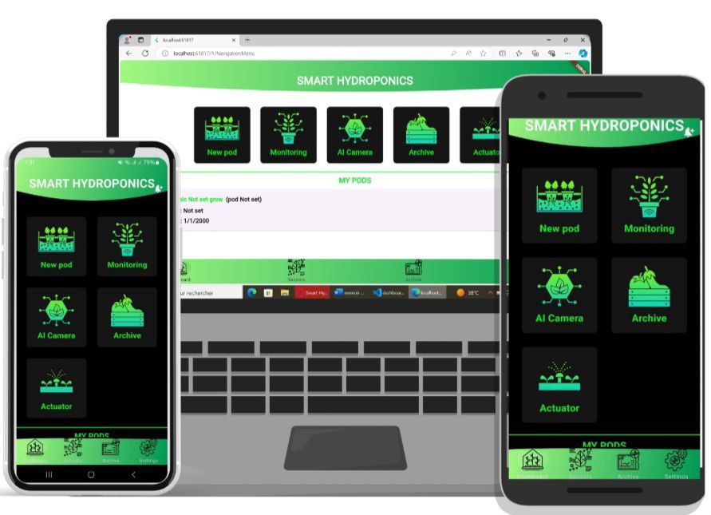
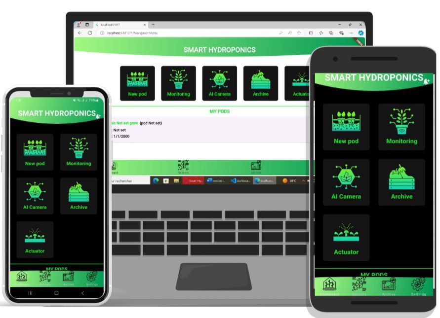
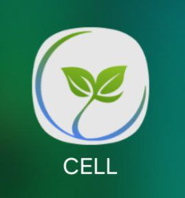
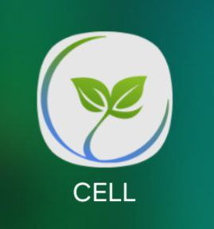

 

Definitions Of CELL Application
Utilizing advanced soil-free agricultural technologies, we seek to provide innovative solutions that boost productivity, optimize water and energy use, and promote more sustainable food production. Our mission is to foster sustainable farming and ensure fair access to food across different communities, working towards a healthier and more livable world for future generations.
As cell, our mission is to increase sustainable food production worldwide using soilless farming technologies and create a more livable world for future generations. By using the benefits of soilless farming, we aim to provide innovative solutions to optimize water and energy consumption, increase efficiency and make food production more environmentally friendly.
Modular system
It is one of the most efficient models of soilless cultivation. it's also: economic environmental Production is fast and diversified Keeping pace with modern technology